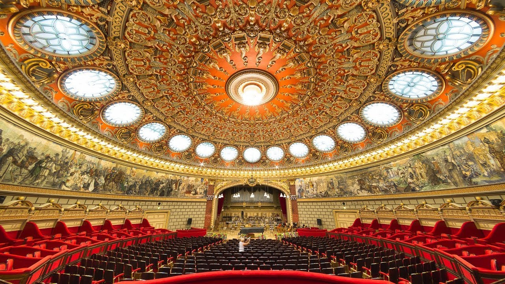

Ateneul Roman
Ateneul Român este o sală de concerte din București, situată pe Calea Victoriei, în Piața George Enescu (în partea nordică a Pieței Revoluției). Clădirea, care este realizată într-o combinație de stil neoclasic cu stil eclectic, a fost construită între 1886 și 1888, după planurile arhitectului francez Albert Galleron. În prezent, adăpostește și sediul Filarmonicii „George Enescu”.
Marea fresca:
Fresca, începută în 1933 și inaugurată în seara zilei de 26 mai 1939, lată de 3 metri și lungă de 70 de metri, se întinde deasupra lojilor, de jur împrejurul tamburului cupolei, cu excepția locului unde se află scena.Este alcătuită din 25 de scene reprezentative din istoria României:
- Imparatul Traian intra in Dacia
- Legionaraii romani colonizeaza Dacia
- Formarea poporului daco-roman
- Starja romana
- Invazia barbarilor
- Inceputurile poprului roman
- Statornicirea
- Descalecarea
- Statul militar
- Statul administrativ-impartirea dregatoriilor
- Cruciada romaneasca
- Formarea poporului daco-roman
- Stefan cel Mare
- LEpoca de pace si credinta
- Mihai Viteazul
- Inceputurile culturii romanesti
- Horia, Closca si Crisan
- 1821-Revolta lui Tudor Vladimirescu
- Anul 1848 in Transilvania
- Anul 1848 in Principate
- Al. I. Cuza
- Anul 1859-Unirea Principatelor
- Carol 1- Raazboiul de Independenta
- Razboiul intregirii nationale 1916-1918
- Ferdinand 1 Interegitorul
- Epoca de consolidare

<<<---PAGINA PRINCIPALA